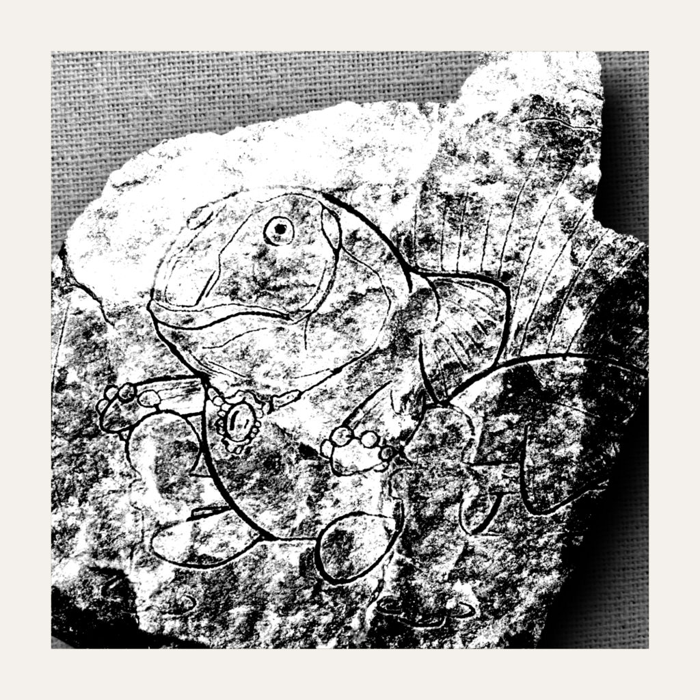

Le Garaudon
Le garaudon est un poisson nageant et se reproduisant dans une des sept mers qui entourent de manière concentrique les sept continents du mont Meru. Traditionnellement, il est supposé que le garaudon habite la mer enchantée, même si certaines chroniques le font parfois apparaître dans la mer de sucre. Quoi qu’il en soit — et bien que toute vérification soit vaine — une histoire de la cosmologie hindoue, que l’on ne retrouve étonnamment dans aucune des grandes épopées de cette civilisation, relate les faits rapportés ci-dessous.
Un garaudon avait découvert, au fond de la mer enchantée, alors qu’il creusait le sable pour y faire son nid, un drageoir façonné dans du platine et incrusté de diamants bleus. Le couvercle de la caissette était fixé à la boîte par quatre vis, solidement serrées à chacun de ses angles. Le garaudon, étant un habile nageur, ne trouva aucune difficulté à produire de petits vortex puissants au-dessus de chaque vis, dévissant ainsi le couvercle sans effort.
Lorsqu’il eut terminé, s’échappa de la boîte une jeune princesse, qui lui apprit qu’elle était restée enfermée là depuis plus de dix mille ans. Ne sachant comment le remercier, elle le pria d’émettre un souhait qui, quel qu’il fût, serait exaucé immédiatement — la princesse possédant des pouvoirs illimités sur le monde inanimé comme sur le monde animé. Le garaudon, subjugué par sa beauté, lui demanda aussitôt de l’épouser. Elle accéda sur-le-champ à sa demande, sans surprise apparente, et l’emmena avec elle.
Il se retrouva enfermé dans le bassin d’un vaste jardin, où d’autres maris de la princesse l’attendaient déjà avec impatience. Il comprit alors, un peu tard, que la polyandrie était d’un usage courant dans les royaumes entourant le Mont Meru, et que rien n’interdisait à la princesse de l’avoir pris pour époux sans pour autant renoncer aux autres.
Il demanda à retrouver sa liberté. Elle la lui accorda.
Le garaudon retourna au fond de la mer, vendit les diamants ainsi que le platine à une coquille Saint-Jacques experte en négoce, et fit bâtir, avec la somme récoltée, la ville sous-marine de Dwarka — aujourd’hui attribuée à Kṛṣṇa.
